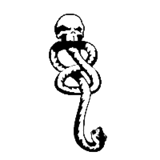

ANICEWEBSITE
by Alana Shee

Harry Potter
CREATED: 2016 . 8 . 9 UPDATED: 2016 . 8 . 9
"Parry Otter, the Chosen Boy Who — well — something of that sort." - Horace Slughorn (J.K. Rowling, Harry Potter and the Half-Blood Prince)
Fan content for Harry Potter is listed here.
Links
ALANA'S HUMBLE FANFICTION COLLECTION
- My fanfic recs on Livejournal
- My fanfiction on AO3
- My fanart on DeviantArt
INTERESTING FAN WORKS ON THE WEB
- Fanfiction, Graphs, and PageRank - Fanfiction as data
- Pottermore Sorting Hat Quiz analysis - A Moste Excellente Use of machine learning
- Snape and the Marauders - Outstanding Harry Potter fan film